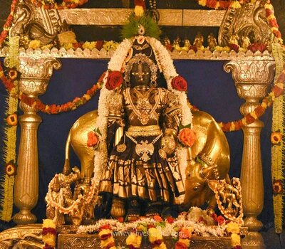
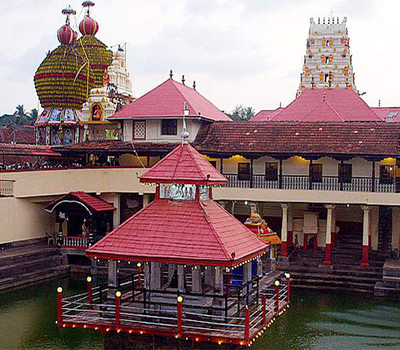
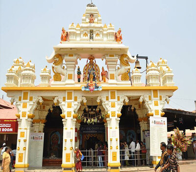
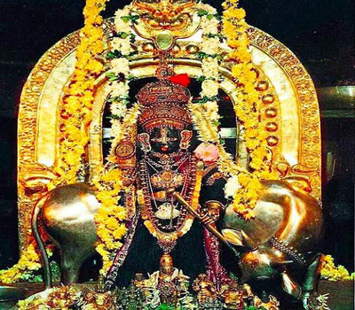

|  |  |
|  |  |
Udupi Shri Krishna Temple is a famous Hindu temple dedicated to Lord Krishna and Dvaita Matha located in the city of Udupi in Karnataka, India.
The Matha area resembles a living Aashram, a holy place for daily devotion and living.
Surrounding the Shri Krishna Temple are several temples namely the Udupi Anantheshwara Temple which is over a thousand years old.
The Krishna Matha is known throughout the world for its religious customs, traditions and tenets of Dvaita or Tatvavada philosophy.
It is also the center of Daasa Saahitya, a form of literature that originated in Udupi.
During the Paryaya festival, held every two years, the temple management is handed over to the next Ashta Matha, which has been entrusted the responsibility of running the temple turn by turn.
Each of the Mathas is headed by a Swami, who will be in charge of the temple during his Paryaya. The Paryaya is held on even years like 2008, 2010 and 2012.
The Paryaya tradition has completed 500 years as of 2021.
Presently, Sri Admaru Math is administering the temple with Junior Pontiff Sri Eshapriya Teertha Swami ascending the post of Sarvajna or Paryaya Peetha.
Festivals like Makara Sankranthi, Ratha Sapthami, Madhva Navami, Hanuman Jayanthi, Sri Krishna Janmashtami, Navarathi Mahotsava, Madhva Jayanti (Vijaya Dashami), Naraka Chathurdashi, Deepavali, Geetha Jayanthi etc. are celebrated very grandly by Paryaya Mutt every year